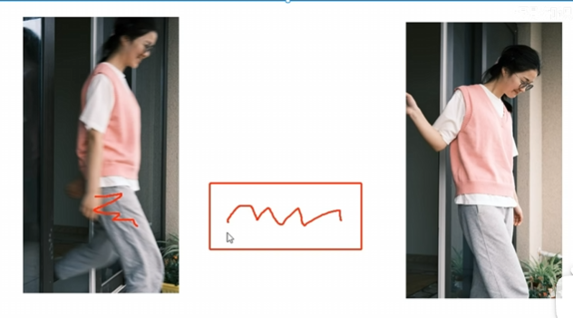

教程及截图来自b站： https://www.bilibili.com/video/BV1DQiyYkEJC/
认识快门
- 快门：控制接收光线的时间 时间长，进光量大，画面亮。
- 在M档、快门优先档（S档）控制。
- 快门影响物体的动态模糊。
- 在快门打开关闭时间内，所拍摄物体没有足够时间移动，那么所拍摄物体时静止的
- 相反，若物体是运动的，则会把运动轨迹记录起来。

安全快门
-
能保证画面清晰所使用的最低快门速度（手持拍摄）
-
具体数值为焦距的倒数，例如50mm焦距，安全快门为：1/50s
-
一些常规题材快门速度推荐（常用调整值）： #拍摄技巧
- 人文题材 新闻报道 快门常用 1/125s
- 行人，跑动的小孩 快门常用 1/500s
高速快门
-
画面亮度会降低，可以清晰的拍摄高速运动的物体
-
限制：场景光线强，否则画面非常暗
-
使用高速快门拍摄的题材 #拍摄技巧
-

低速快门
-
曝光的时间较长，画面中运动的物体的主题会留下运行的轨迹，会变得模糊，同时画面的亮度会被提高。
-
一般需要稳定拍摄，手持的抖动对画面影响大
-
使用低速快门的题材 #拍摄技巧

- 对于摇拍的补充：利用相对静止的原理，跟随运动物体进行平行移动，可以实现拍摄物体清晰，而其他背景模糊，同样也可以使用相机连拍功能实现该效果
- 瀑布水流拉丝效果： 快门常用 5~10s 配合减光镜稳定拍摄（三脚架）。或者调整光圈f/22左右
- 车轨 烟花：快门常用 5~10s 稳定拍摄（三脚架）。调整光圈f/16配合。
快门优先（TV/S）
- 只需调整快门速度
- 为满足日常的 风光拍摄 和 运动摄影
练习
- 高速运动的物体
- 追焦拍摄（摇拍）
- 车轨

认识光圈
- 控制进光量的装置
光圈影响进光量

- 不同的曝光状态：欠曝、过曝
- 光圈会和快门速度一起影响进光量
光圈影响景深
- 光圈的运用： #拍摄技巧
- 大光圈的跑焦问题。使用超大光圈镜头时，最好不要使用最大光圈去拍，降低一个挡位。
- 有时主题突出使用大光圈
- 拍人像时不要一味的使用景深效果（为了突出主题而突出主体）：需要结合环境，有些情况需要环境配合或交代环境
- 有时需要全局清晰使用小光圈 表现大环境


最佳画质光圈
- 一般在最大光圈缩小2~3档位
光圈优先（AV/A）
- 手动调整光圈
- 满足于日常的人像拍摄、静物拍摄
练习
- 虚化效果的小花
认识感光度（ISO）
- 感光器件对光的敏感程度
- 控制亮度和成片质量
- 数值越大，感光度高，那么画面亮
ISO影响画质（噪点）
-

-
感光度的运用 #拍摄技巧
- 对于ISO，其作用相当于给你一盏灯，在黑暗环境下我们需要打开灯看清画面，灯的功率有不同的瓦数。
- 通常情况
- 过暗环境 ISO太高导致噪点
- 兼顾画质和画面：补光 闪光灯、常亮灯
- 画面优先：提高ISO
- 想要复古感，想要噪点：主动提高ISO
曝光三要素的结合使用
在一个阳光灿烂的中午拍摄有虚化效果的小花
- 首先光圈要大一点，才有虚化效果，静止物体，不需要高速或低速快门，室外阳光天气光线充足，ISO调到最小
- f/1.8 1/500 100
- 没有大光圈，怎么办 #拍摄技巧
- 主体离背景足够远，也会有虚化效果
- 感觉可以使用光圈A优先。。
拍摄人在夜晚跑步
- 夜晚环境较暗，使用较大光圈提高进光量，但是太大会跑焦，拍摄运动的物体，快门spee的快一点，但是快门太快画面太暗，于是调高感光度
- f/2.8 1/250 800
- 个人感觉可以使用快门S优先。。